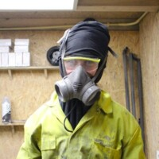

Nerd 3: Jerfrey Arts
Samenvatting
Jeffrey Arts, een creatieve frontend developer met een achtergrond in product design, presenteerde tijdens de Weekly Nerd een overzicht van zijn werkproces binnen het web development ecosysteem. Hoewel de lezing niet heel informatief was, deelde Jeffrey enkele aspecten van zijn werk:
- Localhost/Live Server Script: Jeffrey had een script ontwikkeld om eenvoudig over te schakelen van een localhost-omgeving naar een live server. Hoewel dit een handige tool leek, was de technische uitleg moeilijk te volgen.
- Toolbox: Hij liet zijn toolbox zien, waarin hij code en tools opslaat voor hergebruik in andere projecten. Dit helpt bij efficiëntie en het hergebruiken van eerder geschreven code.
Reflectie
Ik vond deze Weekly Nerd sessie niet erg boeiend. Jeffrey’s uitleg was beperkt en er werd vooral veel getoond zonder diepgang in de uitleg. De technische details over zijn localhost/live server script en zijn toolbox waren lastig te begrijpen. Hoewel de kunstwerken die hij in zijn workshop maakte indrukwekkend waren, leerde ik weinig nieuws van deze sessie. Over het algemeen vond ik de presentatie teleurstellend en weinig leerzaam.
Conclusie
De lezing van Jeffrey Arts bood weinig informatieve waarde en was moeilijk te volgen vanwege het gebrek aan diepgang en uitleg. De praktische aspecten van zijn werk, zoals het script voor de localhost/live server en zijn toolbox, waren moeilijk te begrijpen. Daarom geef ik deze Weekly Nerd een rating van 3/10.